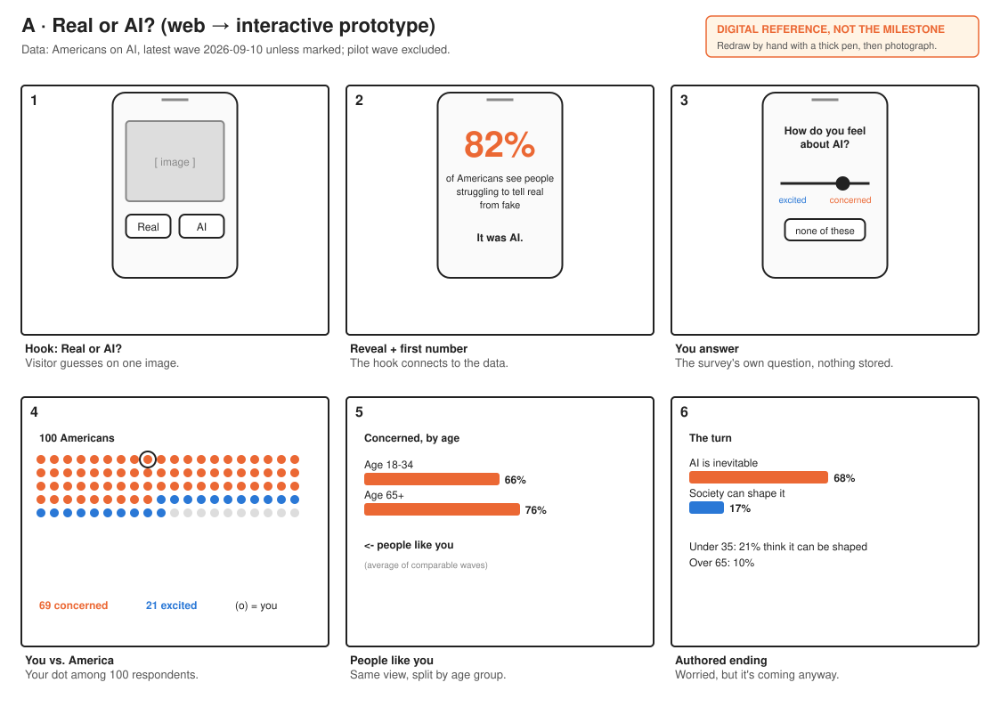
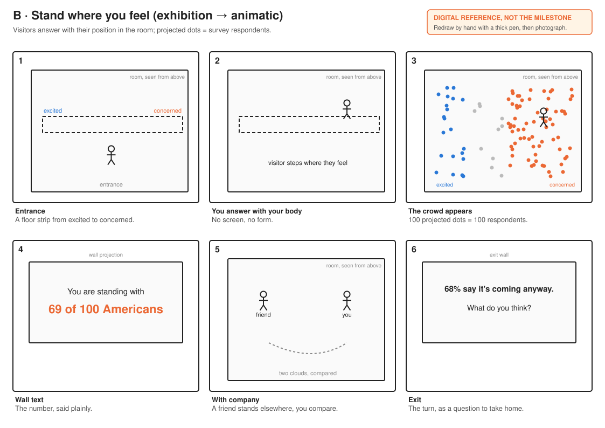
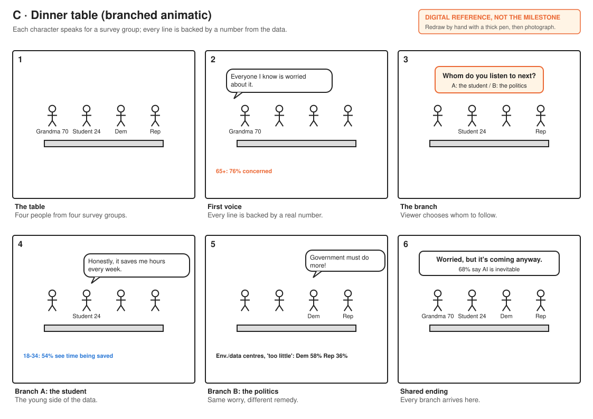

<!doctype html><meta charset="utf-8"><title>W43 storyboards</title><style>body{margin:0;background:#eee;font-family:sans-serif}section{background:#fff;max-width:1123px;margin:16px auto}img{width:100%;display:block}@media print{@page{size:A4 landscape;margin:0}body{background:#fff}section{margin:0;page-break-after:always}}</style><section></section><section></section><section></section>